Oil geopolitical risk: off the March peak, still high. Iacoviello's oil-related AI-GPR read 752 in September, below the March 2026 record of 1,844 but above the 2003 Iraq-war (515) and 2022 Ukraine (736) readings. Source: https://www.matteoiacoviello.com/ai_gpr.html
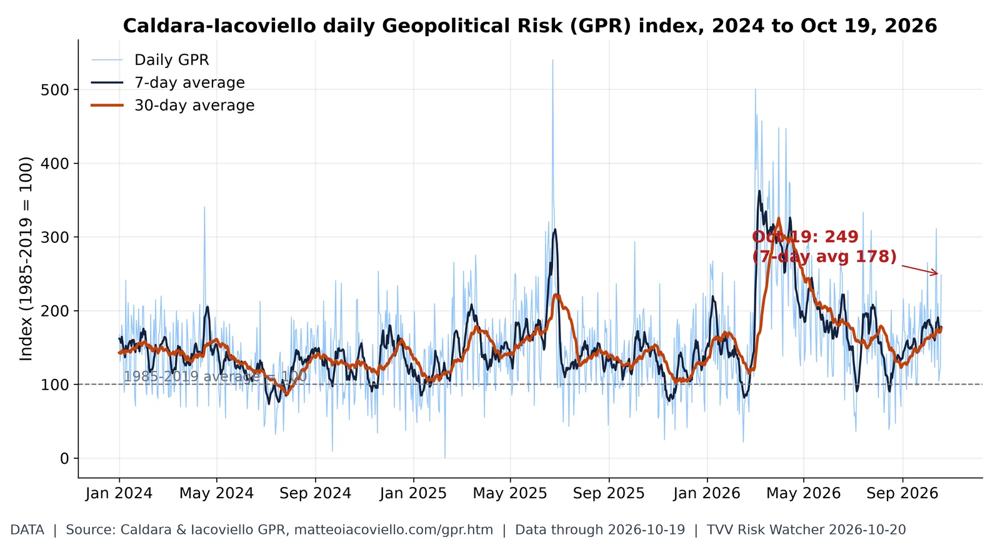
Daily Geopolitical Risk index. Daily GPR read 249 on Oct 19 (7-day average 178, 30-day 176) against a 1985-2019 norm of 100; the 2026 daily high so far is 501 on Mar 2. Source: https://www.matteoiacoviello.com/gpr.htm
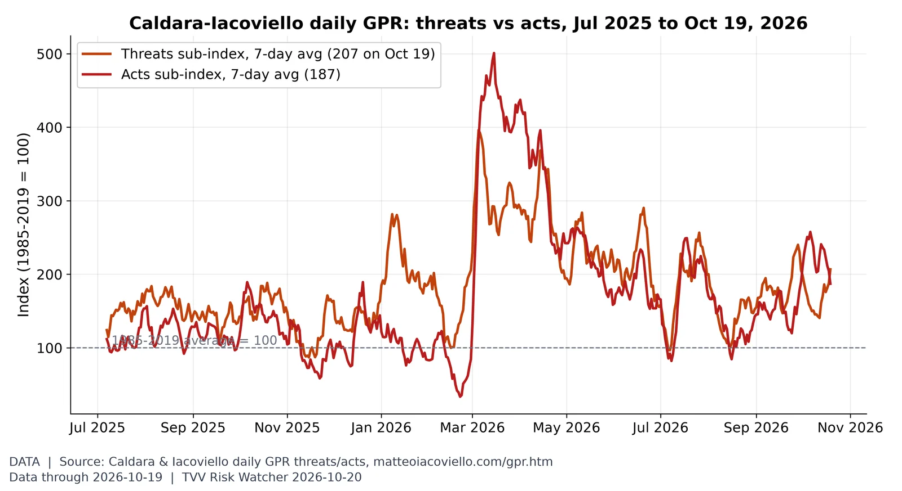
Threats vs acts. In the week to Oct 19 the threats sub-index averaged 207 and the acts sub-index 187 (2026 highs of the 7-day averages: threats 396 on Mar 5, acts 501 on Mar 15). Source: https://www.matteoiacoviello.com/gpr.htm
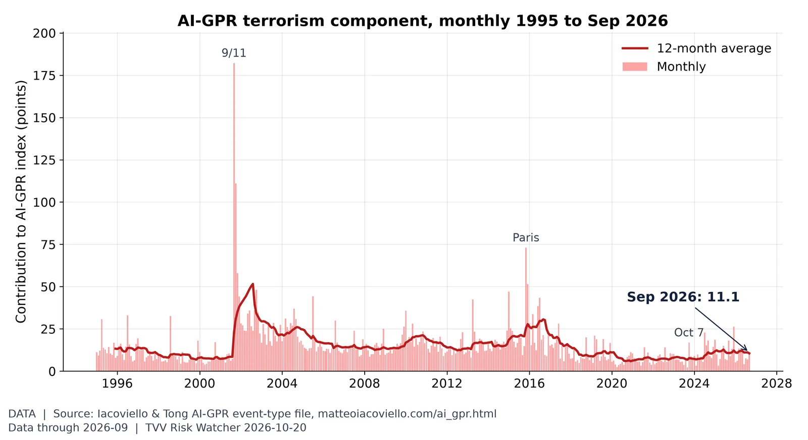
Terrorism share of geopolitical risk. The terrorism component of AI-GPR was 11.1 in September vs 7.0 in August; the 2026 monthly high is 13.3 (March) and the 12-month average is 10.5. Source: https://www.matteoiacoviello.com/ai_gpr.html
M6+ earthquake pace. 2026 has 113 M6+ quakes through Oct 20 vs a 2000-25 median of 116 by this date (range 81-182). Latest: M6.3 197 km NW of Port-Olry, Vanuatu (Oct 20, 04:20 UTC). 12 duplicate USGS solution(s) of the same event merged. Source: https://earthquake.usgs.gov/fdsnws/event/1/
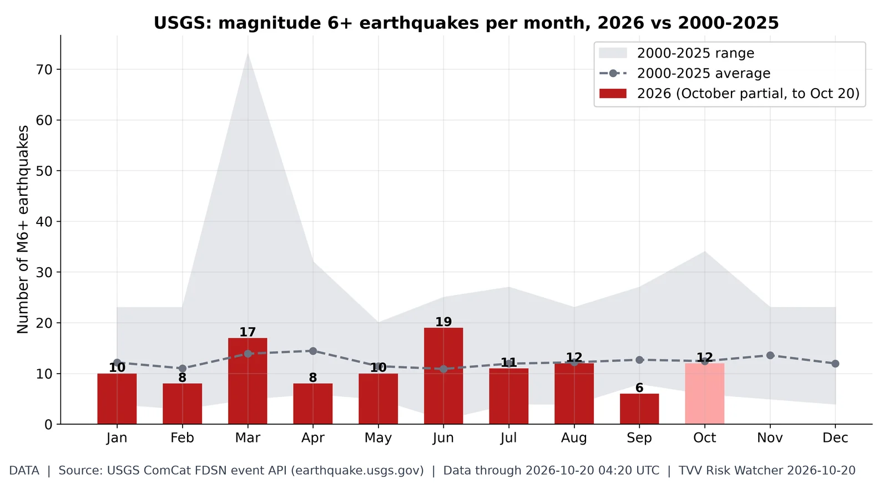
M6+ quakes by month. October 2026 has 12 M6+ quakes through Oct 20 vs a 2000-25 full-October average of 12.4; the busiest 2026 month was Jun (19). Source: https://earthquake.usgs.gov/fdsnws/event/1/
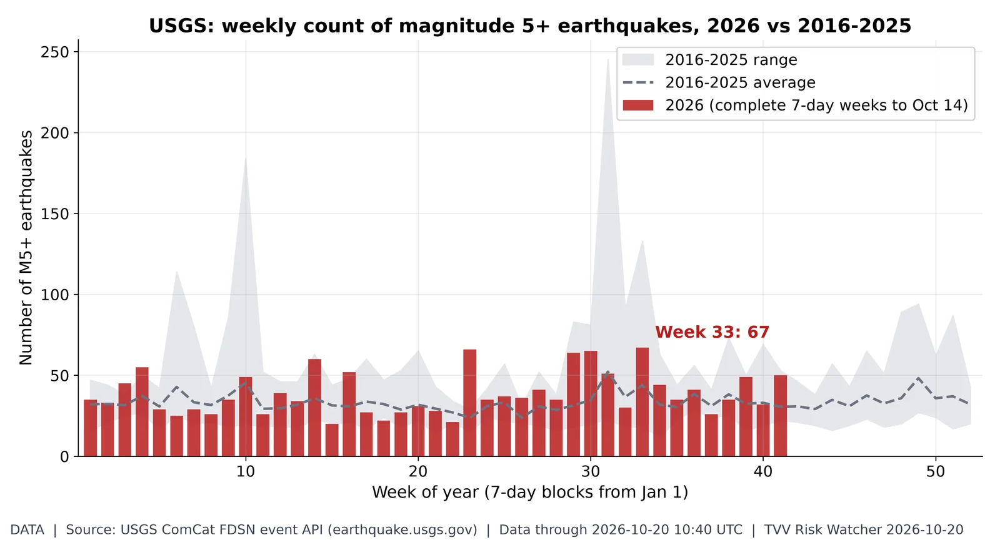
Weekly M5+ quake count. 2026 has 1,618 M5+ quakes through Oct 20 vs a 2016-25 average of 1,388 by this date (range 1,186-1,887); the busiest 2026 week was week 33 with 67. Source: https://earthquake.usgs.gov/fdsnws/event/1/
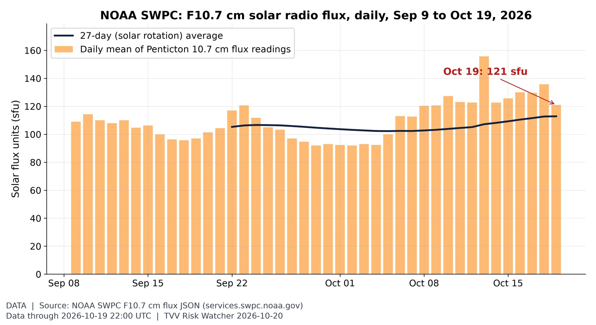
Solar activity proxy: F10.7 flux. The 10.7 cm solar radio flux, a standard proxy for solar activity and upper-atmosphere drag on satellites, was 121 sfu on Oct 19 (27-day average 113; window range 92-156). Source: https://www.swpc.noaa.gov/phenomena/f107-cm-radio-emissions
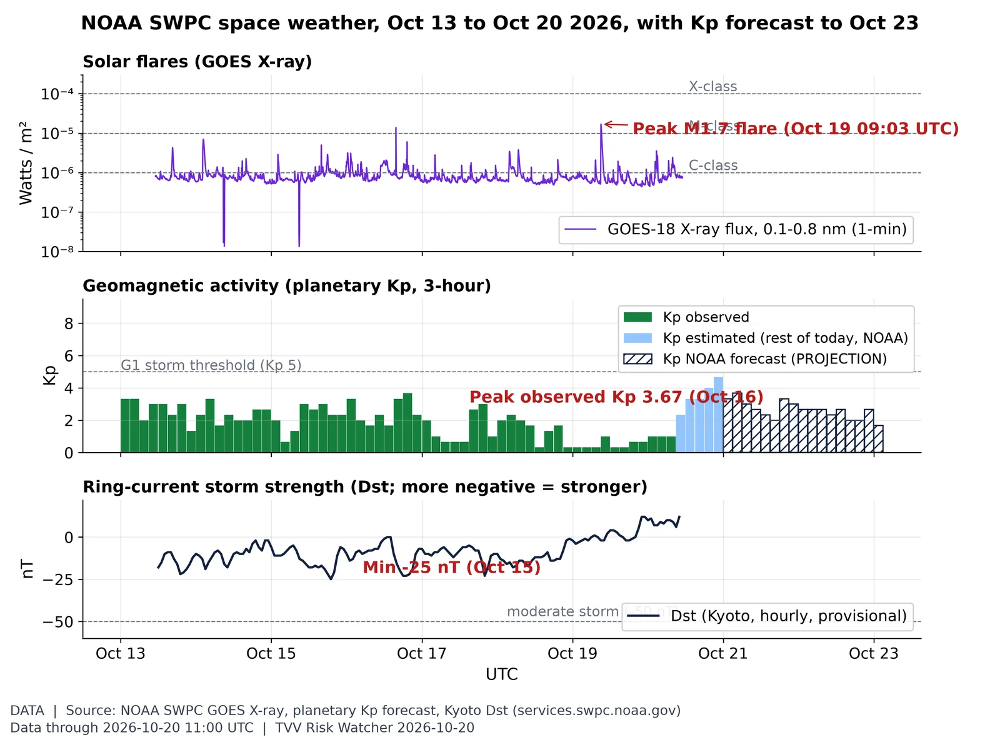
Space weather this week: flares, Kp, Dst. The G1 forecast for Oct 19 did not verify (max Kp 1.00); observed Kp is 1.00 so far Oct 20 (to 09:00 UTC) and Dst 12 nT. The week's biggest flare was M1.7 (Oct 19). NOAA now forecasts a peak Kp 4.67 (NOAA Scale G1) for Oct 20 (issued 2026 Oct 20 0030 UTC). Source: https://www.swpc.noaa.gov/products/goes-x-ray-flux
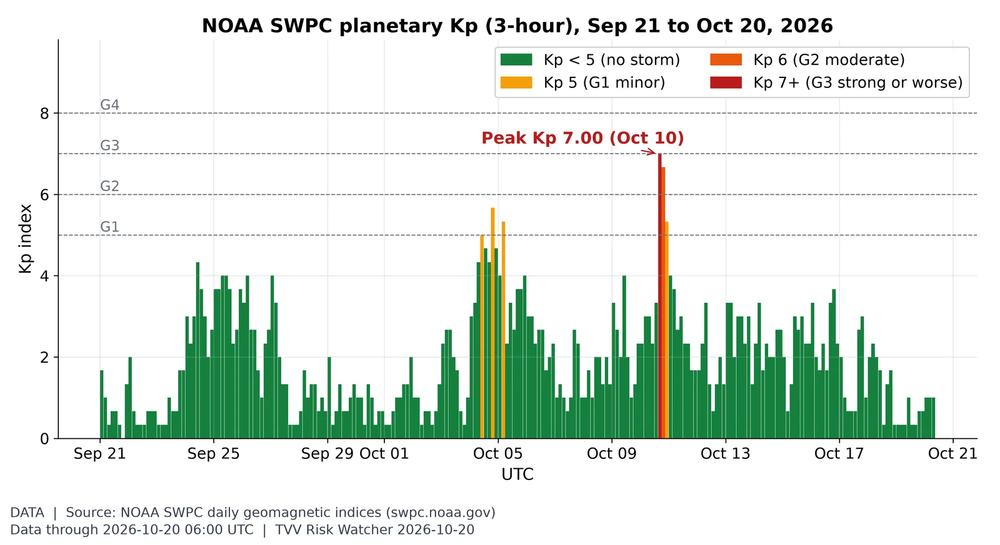
Geomagnetic activity, last 30 days. Kp peaked at 7.00 on Oct 10 in this 30-day window; Oct 19 maxed at Kp 1.00 (the forecast G1 did not verify), and NOAA's latest 3-day forecast (issued 2026 Oct 20 0030 UTC) has a peak Kp 4.67 (NOAA Scale G1) on Oct 20. Source: https://www.swpc.noaa.gov/products/planetary-k-index
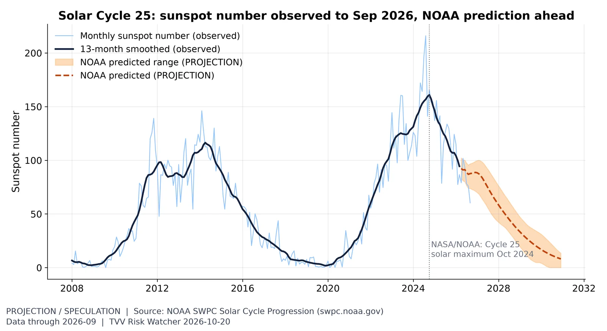
Solar Cycle 25 progression. The monthly sunspot number was 60 in September, past the Oct 2024 maximum; declining phases can still bring large flares and CME storms such as Oct 10's. Source: https://www.swpc.noaa.gov/products/solar-cycle-progression
Yield curve after inversion. The 10Y-2Y spread is +0.38 pt on Oct 19 (Treasury: 10Y 5.15%, 2Y 4.77%), positive after the 2022-24 inversion; un-inversion preceded past recessions. Source: https://fred.stlouisfed.org/series/T10Y2Y
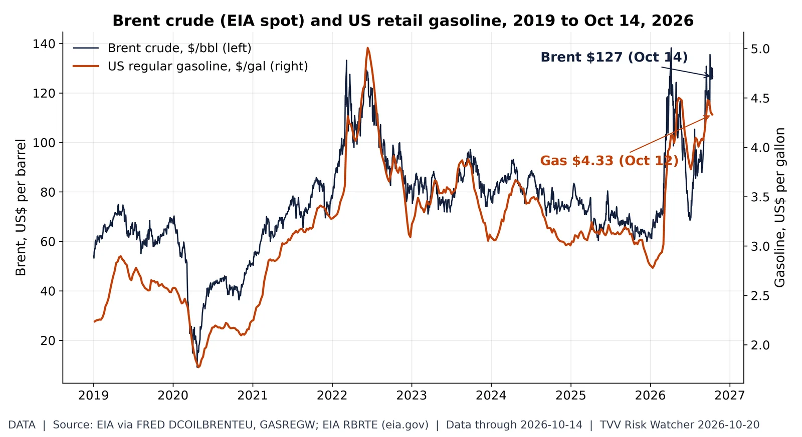
Oil shock at the pump. EIA Brent spot was $126.55 on Oct 14 (period peak $138 in April 2026); EIA's US regular gasoline average was $4.33 in the week of Oct 12. Both EIA series lag the market by about a week. Source: https://fred.stlouisfed.org/series/DCOILBRENTEU
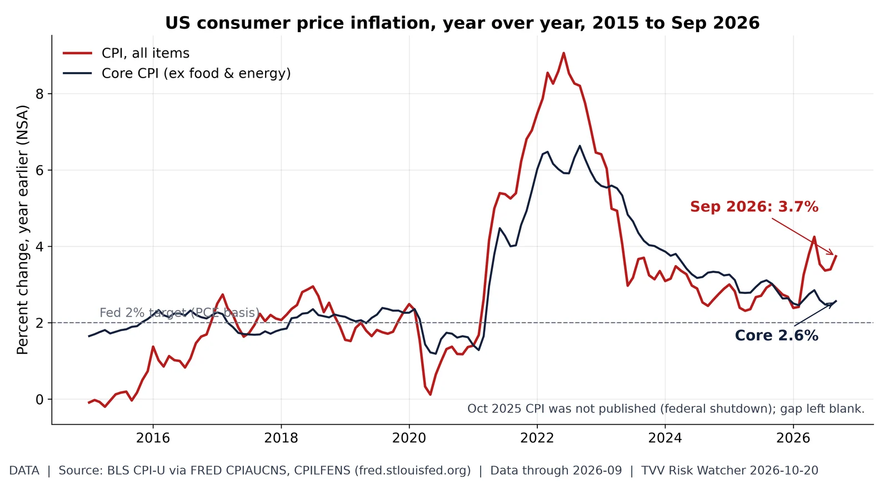
Energy-led inflation gap. Headline CPI was 3.7% year over year in September (from 3.4% in August) while core was 2.6%: energy is driving the gap. Source: https://fred.stlouisfed.org/series/CPIAUCNS
US measles resurgence. NNDSS shows 4,076 US measles cases through MMWR week 40 of 2026, 2.0x all of 2025 (2,026); the provisional weekly table had no newer week posted by 7 AM ET Oct 20. Source: https://data.cdc.gov/NNDSS/NNDSS-Weekly-Data/x9gk-5huc
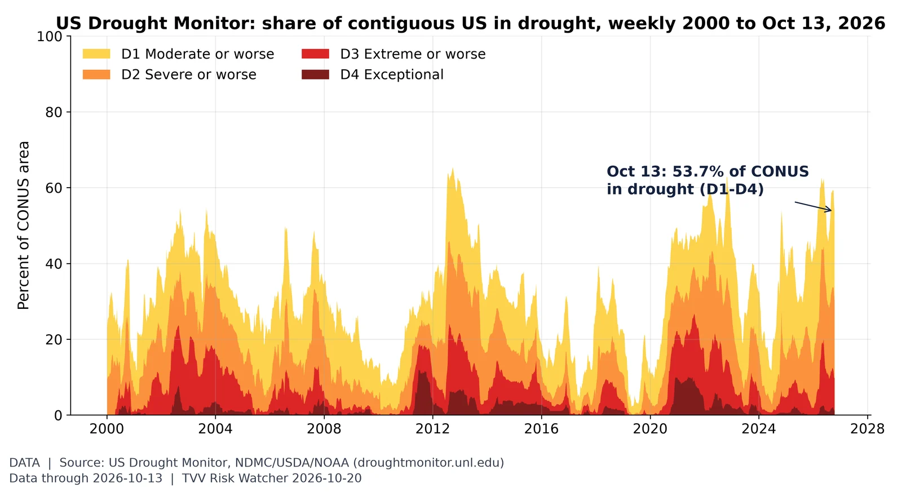
Critical Water Shortage, US view. 53.7% of the contiguous US was in drought (D1-D4) on the map valid Oct 13, higher than in 93% of weeks since 2000; 9.8% was extreme or worse. Source: https://droughtmonitor.unl.edu/DmData/DataDownload.aspx
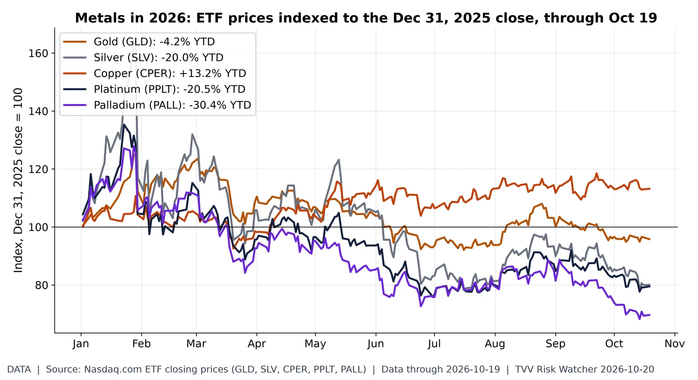
Metals scoreboard 2026. Through the Oct 19 close, Copper (CPER) leads 2026 at +13.2% and Palladium (PALL) trails at -30.4%; gold (GLD) is -4.2% and silver (SLV) -20.0%. ETF price changes, not spot. Source: https://www.nasdaq.com/market-activity/etf/gld/historical
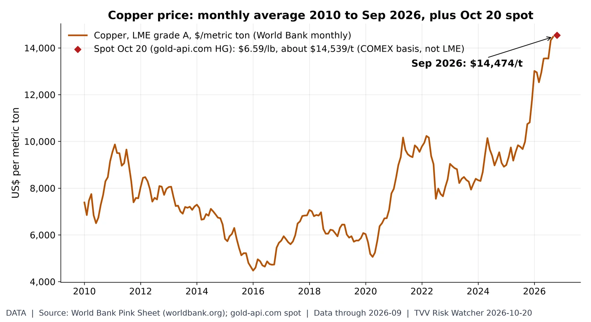
Copper near the top of its range. Copper averaged $14,474/t in September (a 2010-26 monthly record); the Oct 20 COMEX-basis spot quote is $6.59/lb (about $14,539/t). Source: https://www.worldbank.org/en/research/commodity-markets
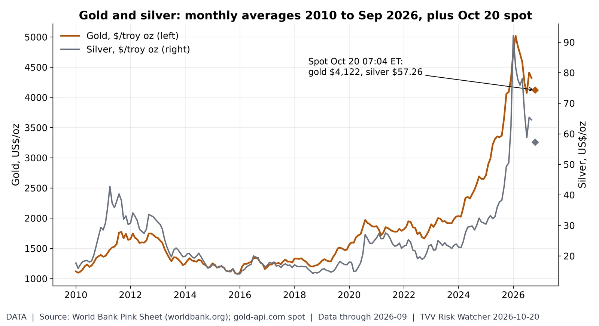
Haven metals. Gold averaged $4,319 in September (2010-26 monthly high $5,020, Feb 2026) and silver $64.60; gold-api.com spot at 07:04 ET Oct 20 is gold $4,122, silver $57.26. Source: https://www.worldbank.org/en/research/commodity-markets
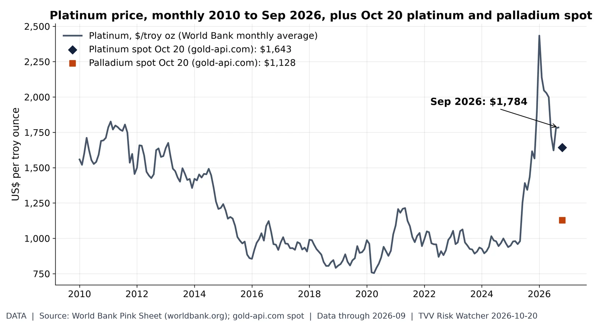
Platinum group metals. Platinum averaged $1,784/oz in September (2010-26 high $2,434, Jan 2026); Oct 20 spot quotes at 07:04 ET are platinum $1,643 and palladium $1,128. Source: https://www.worldbank.org/en/research/commodity-markets
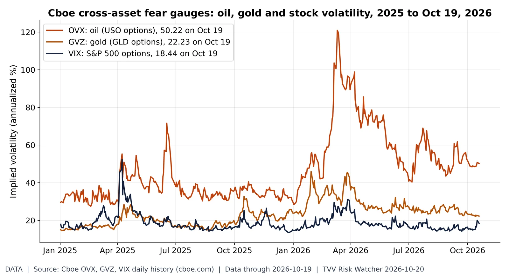
Oil volatility vs stock volatility. On Oct 19, oil implied volatility (OVX) closed at 50.22, 2.7x the VIX (18.44); gold's GVZ was 22.23. OVX's 2026 closing high is 120.91 (Mar 11). Source: https://www.cboe.com/us/indices/dashboard/ovx/
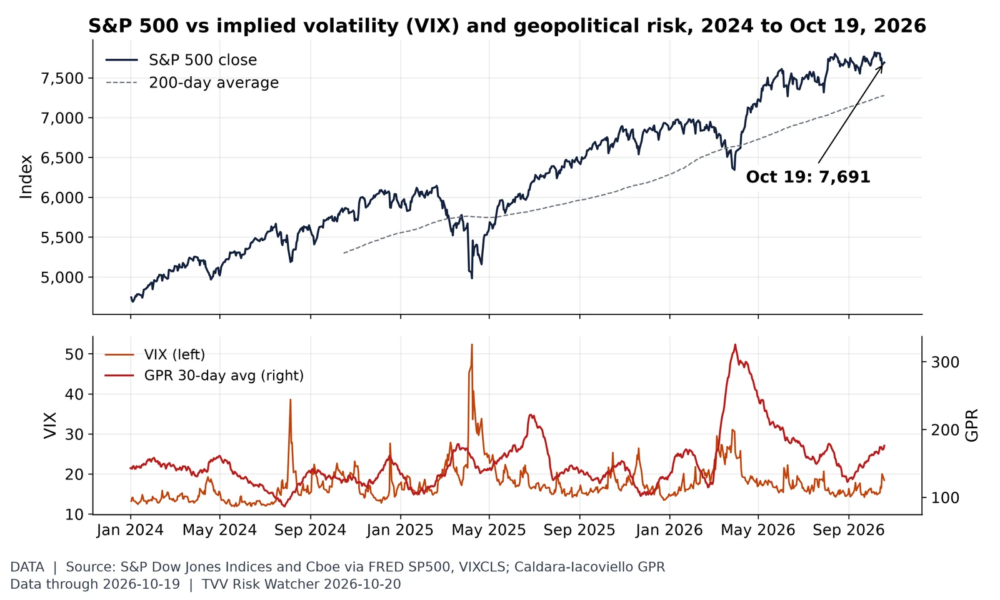
Stocks vs volatility and geopolitical risk. The S&P 500 rose 0.41% to 7,690.73 on Oct 19, +5.7% vs its 200-day average, with VIX at 18.44; the GPR 30-day average was 176 on Oct 19. Source: https://fred.stlouisfed.org/series/SP500
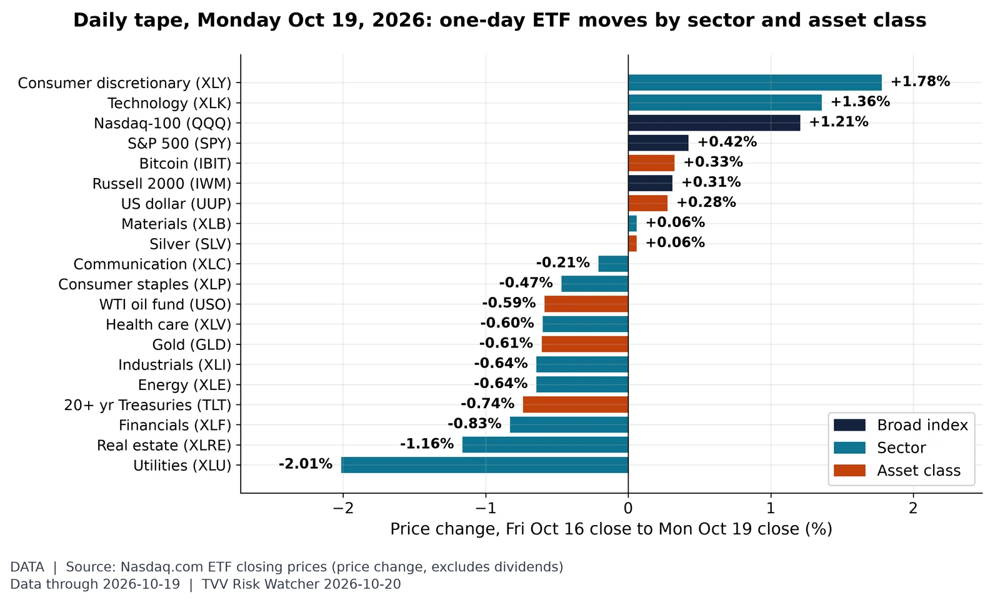
The last session by sector. On Monday Oct 19, the best performer was Consumer discretionary (XLY, +1.78%) and the worst Utilities (XLU, -2.01%), with SPY +0.42% and QQQ +1.21%. Source: https://www.nasdaq.com/market-activity/etf/spy/historical
Recession odds. Traders price a 6.5% chance of a US recession by end-2026 (market rules define it), vs a high of 12.5% on Sep 24 in the API history window (hourly since Sep 20). Source: https://polymarket.com/event/us-recession-by-end-of-2026
The US-China AI model race. Epoch's database lists 84 notable AI models for 2026 to Sep 30: 49 from US organizations and 29 from Chinese ones (2025: 62 US, 33 China, 107 total). Recent years fill in as Epoch adds models. Source: https://epoch.ai/data/ai-models